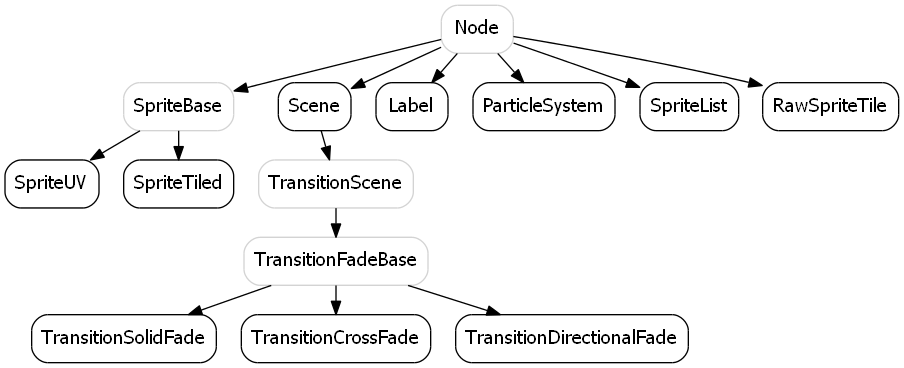
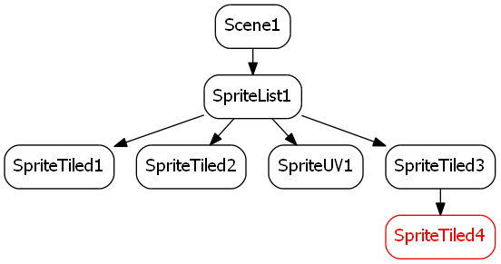
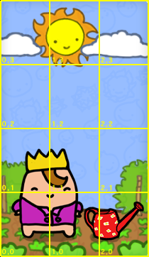

この文書ではハイレベルライブラリであるSce.PlayStation.HighLevel.GameEngine2Dについて説明します。
GameEngine2Dは、シンプルな2Dゲームを開発するのに必要な基本的機能を提供します。
Contents
ゲームエンジン2Dがカバーしているもの:
GameEngine2Dのライブラリは2つの名前空間に分割されています。
Sce.PlayStation.HighLevel.GameEngine2D.Base
Sce.PlayStation.HighLevel.GameEngine2D.Base は、拡張数学ライブラリ、描画機能（スプライトの描画とイミーディエイトモード)、入力支援、カメラ、フォントマップ、行列スタックといった、様々な2Dの機能を含んでいます。Sce.PlayStation.HighLevel.GameEngine2D
Sce.PlayStation.HighLevel.GameEngine2D は、Sce.PlayStation.HighLevel.GameEngine2D.Baseの上に構築された、いわゆるゲームエンジン(シーングラフ、スケジューラ、アクションなど)を含んでいます。
ゲームエンジン2DライブラリのHighLevelは、Cocos2D (http://www.cocos2d-iphone.org/) を参考に作られています。とりわけ、Director, Scheduler, ActionManager クラスはCocos2Dに相似したつくりになっています。
ゲームエンジン2Dライブラリはソースコードが提供されていますので、ふせてご覧ください。
ゲームエンジン2Dがカバーしていないもの:
- ゲームエンジン2Dは、Sce.PlayStation.HighLevel.GameEngine2D.Base.Math内にある2、3のシンプルな汎用ルーチンを除き、衝突判定を提供していません。
- 物理エンジン、サウンド、ネットワークなどの機能は提供していません。。
- UIシステムは提供していません。（ただし、サンプルで示されている例のように、シンプルなテキスト表示機能やスプライト描画機能の能力を使って、UI要素は容易に実装することができます）。
ライブラリをソリューションに登録する
GameEngine2Dを利用するには、ライブラリ Sce.PlayStation.HighLevel.GameEngine2D をソリューションに追加します。
ライブラリをソリューションに追加する方法は、 統合開発環境PSM Studioの基本的な使い方 - コンパイル済みのライブラリ (dll) をソリューションに追加する を参照してください。
初期化
HelloSprite サンプルでは基本的な使い方を説明します。
最初のステップはDirectorの初期化です。 Directorは、Directorのインスタンスを経由して、全てのゲームエンジン2Dのグローバルオブジェクトにアクセスするためのシングルトンクラスです。
//グラフィックスコンテキストを作成します。（選択可) Sce.PlayStation.Core.Graphics.GraphicsContext context = new Sce.PlayStation.Core.Graphics.GraphicsContext(); // 利用予定の最大スプライト数(パーティクルは含みません)。 uint sprites_capacity = 500; // デバッグ描画で利用することのできる最大頂点数。 uint draw_helpers_capacity = 400; // 外部からのコンテキストを通じて、GameEngine2Dシングルトンクラスの初期化します。 Director.Initialize( sprites_capacity, draw_helpers_capacity, context );
空のシーンを作る
初期化後、シーングラフが必要になります。最もシンプルなシーンは、ルートノードとなる、ひとつのシーンオブジェクトで構成されます。
var scene = new Scene();
ループ
シーンを実行する用意ができました。下記のソースコードでメインループを実行します。
Director.Instance.RunWithScene( scene );
進化したループ
もう一つの方法として、ループを手動で扱うこともできます。この場合、DirectorインスタンスのUpdate()とRender()、PostSwap()を適切な順番で呼び出す必要があります。
Director.Instance.RunWithScene( scene, true ); while ( true ) { Sce.PlayStation.Core.Environment.SystemEvents.CheckEvents(); Director.Instance.Update(); Director.Instance.Render(); Director.Instance.GL.Context.SwapBuffers(); Director.Instance.PostSwap(); }
一般的な構造
ゲームエンジン2Dのシーングラフは、ゲーム世界のノード階層を保持したり、描画対象を巡回したりするのに使用します。その他の用途には使用しません。例えば、Update()関数を呼び出すための巡回機能はありません（これはSchedulerで行います）
それぞれのシーングラフのルートノードは、Sceneノードです。Sceneのナビゲーションは、Directorのインスタンスシングルトン経由でシーンスタックにより扱われます。
加えてゲームエンジン2Dでは、Directorオブジェクトは、ゲームエンジン2Dライブラリで利用する、他のグローバルオブジェクトの多くを保持します。
基本的なNodeオブジェクトは子ノードのリストと多くとも一つの親ノードを持っています。子ノードはChildrenプロパティを経由してアクセス可能であり、親ノードはParentプロパティを経由してアクセス可能です。ParentプロパティやChildrenプロパティは、AddChild()、RemoveChild()、RemoveAllChidren()を使って操作します。
ノードの更新
各ノードは「アクション」を持つことができます。アクションはActionManagerインスタンスによって管理されますが、主にNodeのメンバ関数を経由して実行されます。
各ノードは、インスタンスに対するUpdate関数といった、スケジュール関数を持つことができます。スケジュール関数はSchedulerインスタンスによって管理されますが、主にNodeのメンバ関数を経由して実行されます。
ゲームエンジン2DのActionManagerとSchedulerはCocos2DのActionManagerとSchedulerに相当します。
ノードの位置プロパティ
NodeはPosition/Rotation/Scale/Skew(歪曲)からなる2D変換行列を持ちます。PivotはRotation/Scale/Skewを行う際に、中心軸として利用されます。この「ローカル」の変換行列はGetTransform()によって取得します。 ソースコードでは、ノードの変換行列は次に相当します。
Matrix3.Translation( Position ) * Matrix3.Translation( Pivot ) * Matrix3.Rotation( Rotation ) * Matrix3.Scale( Scale ) * Matrix3.Skew( new Vector2( FMath.Tan( Skew.X ), FMath.Tan( Skew.Y ) ) ) * Matrix3.Translation( -Pivot )上のプロパティの設定を行うと、ノードとその配下のサブツリーが移動、回転、拡縮、歪曲します。
ノードオブジェクトの階層構造
次の図は、シーングラフノードの階層図です。灰色のノードは、直接利用しない中間タイプのノードです。

SpriteUVとSpriteTiledを使うと、ノードから派生した個々のスプライトオブジェクトを操作することができます。
ベースノードの変換行列プロパティ（それはスプライトノードへの機能でもある）に加えて、SpriteUVとSpriteTiledは、幾何情報を決定するQuadプロパティを持ちます。
TRSオブジェクト (移動(T), 回転(R) スケーリング(S))であるQuadプロパティは、スプライトに対する第2のローカル変換行列とみなすこともできます。
しかし、明確化のため、それをQuadの「幾何情報」と宣言します。
スケジューラを使ってノードを移動させる
たいてい場合、スケジュール関数の内部でノードオブジェクトを動かします。
与えられたノードに対して、毎フレーム呼び出す関数を登録する簡単な方法は、Scheduler内のNode.Scheduleを使ってラムダ関数を登録することです。
sprite = new SpriteUV(); // 初期位置の設定。 sprite.Position = new Vector2(2,3); sprite.Schedule( ( dt ) => { // 毎フレーム呼び出す。 float period_in_seconds = 3.0f; float wave = ( ( 1.0f + FMath.Sin( (float)Director.Instance.CurrentScene.SceneTime * Math.Pi / period_in_seconds ) ) * 0.5f ); sprite.Rotation = Vector2.Rotation( Math.Pi * 2.0f * wave ); sprite.Scale = new Vector2( 1.0f + 2.0f * wave ); } );ノード関数を毎フレーム呼び出すもう一つの方法は、Spriteクラスからクラスを派生させ、Update()関数をオーバーライドし、Node.ScheduleUpdate()でそれをスケジュールすることです。
アクションを使ってノードを移動させる
アクションはノードを移動させるのに使用します。次のソースコードでは、スプライトを0.1秒で座標(10,5)に移動させるアニメーションをキック（起動）しています。
sprite.RunAction( new MoveTo( new Vector2(10.0f,5.0f), 0.1f ) );特殊アクションであるTweenプロパティを設定することで、補間曲線を変更することができます。
sprite.RunAction( new MoveTo( new Vector2(10.0f,5.0f), 0.1f ) { Tween = (t) => Math.PowEaseIn(t,4.0f) } );Cocos2DのMoveTo, MoveBy, ScaleTo, ScaleByなどに相当するアクションや、より一般的なActionTweenGenericVector2, ActionTweenGenericVector4, ActionTweenGenericVector2Scale, ActionTweenGenericVector2Rotationといったアクションも、位置プロパティに影響を与えます。
スプライトの幾何情報について :TRS
スプライトのQuadプロパティ（TRSオブジェクト）を使用すると、ノードのローカル空間のサイズ、位置と向きを設定することにより、スプライトの幾何情報を指定することができます。
- Tプロパティ（Tは移動の略）は、四角形の"左下"ポイントの座標です。
- Sプロパティ（Sはスケールの略）は、矩形のサイズです。
- Rプロパティ（Rは回転の略）の四角形の向きを表します。これは四角形のローカルx軸とみなすことができます。
TRSの回転は、角度をあわわしたスカラーではなく、単位ベクトルとして直接あらわされることに注意してください。(ただし、角度としてのRを設定、取得するインターフェースも存在します。)
TRSはRを正規化しません。正規化するかどうかは、開発者が判断します。Rの代わりにRotationNormalize経由でRプロパティの設定し、正規化を行います。
No rotationはRが(1,0)、すなわちX軸に設定されていることを意味します。T、R、Sの量が何を意味しているか、例をあげておきます。 これらの画像では、ワールド座標系のxとy軸が太い黒線で表示されています。 スプライトのコンテキストでは、これらのラインをノードのローカル座標系（すなわちGetTransform()のあとに来る空間として）として見ることもできます。
最も単純なTRSは、おそらく TRS.Quad0_1 と呼ばれる単位クワッドです。
TRS trs = TRS.Quad0_1; // the unit quad次は回転の例です。
TRS trs = new TRS() { T = new Vector2( 5.0f,-3.0f ), R = Vector2.Rotation( Math.Deg2Rad( 45.0f ) ), S = new Vector2( 1.0f, 2.0f ) * FMath.Sqrt(2.0f) };スプライトとシーングラフの変換
グラフの巡回時に連結されていく変換行列情報は、Node.GetTranform()のみです。 スプライトオブジェクトのQuadプロパティは子の位置に影響を与えません。影響をあたえるのはスプライトの幾何情報(長方形)のみです。
どのスプライトタイプを使うか
SpriteUVは、手動で頂点UVを設定できるスプライトのノードを提供します。
SpriteTiledは、スプライトのアニメーションを行うため、グリッド上に規則的に配置された画像を扱うのに利用します。 これは2Dゲームでは効率的といえます。
パフォーマンス
しかしSpriteUVとSpriteTiledは、「独立的」に描画処理を行います。これは、セットアップのために大きなオーバーヘッドがかかり、かつ高価なオブジェクトであることを意味します。
パフォーマンス的に賢明なのは、一つのスプライトを描画するのにいちいちDrawArraysを呼び出さないようにすることです。可能な限り、描画を一括しておこなうことが重要になります。
これはつまり、同じcolor/texture/blend モードを使って描画するという制約のもとで、SpriteListを実行することです。
これを行うには、SpriteUVとSpriteTiledオブジェクトをグループ化し、SpriteListオブジェクトに少数の子として配置します。
SpriteListオブジェクトのすべての子が、一度のDrawArraysの呼び出しで描画されます。
個別の描画処理:
一括化された描画処理:
SpriteListについては、次の制限事項に注意してください。
- SpriteListノードの子のあとに、シーングラフの階層構造を1レベル継続すると、不安定な動作になります。
- SpriteListノードの子は、SpriteUVかSpriteTiledのみにしてください。
次の図は、無効なシーングラフです:
一括して描画するときに、スプライトの一部がCPU上で変換する必要があることに注意してください。しかし、これは個別にスプライトを描画するためのコストと比較して、安価であるといえます。
余分なCPU変換はスキップすることもできます。その場合、配置するスプライトのクワッド·プロパティに依存する必要があります。
SpriteListパフォーマンスが優れている場合でも、ノードのオブジェクトとして各スプライトを処理するのは、いくつかのケースでは無駄かもしれません。なぜなら、ノードが比較的重いオブジェクトであるためです。
RawSpriteTileは、スプライトごとに、はるかに軽いデータ構造を持つスプライトのリストをレンダリングすることができます。
TextureInfoはGameEngine2Dのテクスチャ情報を格納するためのオブジェクトです。これは、Texture2Dオブジェクトとそれに関連付けられたタイル情報を格納します。タイルグリッドのソース領域は、UV領域内で、任意の向きの長方形にすることができます。ほとんどの場合、これは（0,0）から（1,1）の長方形となります。
TextureInfoは、コンストラクタから渡されるTexture2Dオブジェクトの所有権を取得します。そのため、自身のDispose()関数で、Texture2Dオブジェクトを破棄します。
作成したTextureInfoオブジェクトは、開発者が廃棄(Dispose)する責任があります。
タイル
TextureInfoコンストラクタは、2Dタイルのサイズ、および必要に応じてUVソース領域（デフォルトではフルのUV領域、単位正方形）を取ります。
TextureInfo test_texture = new TextureInfo( new Texture2D("data/king_water_drop.png", false) , new Vector2i(3,4), TRS.Quad0_1 );以下は、ソース領域がTRS.Quad0_1（フルスプライト）という状態で、3x4のタイル（上記のコード）のタイルのインデックスです。

文字のリストとフォントオブジェクトを含むテキストがわかれば、テクスチャと描画に使用するUVテーブルを格納した、フォントマップオブジェクトを構築することができます。 テキスト全体のイメージを毎フレーム生成するわけにはいかないので、フォントマップが必要です。 フォントマップのコンストラクタには、フォントマップを使ってテキストをレンダリングする際に使用される予定のすべての文字を渡す必要があります。
同じようにTextureInfoは渡されるTexture2Dの所有権を取得し、フォントマップは、そのコンストラクタに渡されたFontオブジェクトの所有権を取得します。
また、TextureInfoのように、作成したフォントマップオブジェクトは開発者が廃棄する責任があります。
オブジェクトを破棄し忘れると、すぐにメモリ不足のエラーにつながります。例えば、シーンを頻繁に切り替えたのに、適切にグラフィックリソースを解放するのを忘れたりする場合です。
次のクラスは、作成したオブジェクトを開発者が破棄する責任があります。
- TextureInfo
- FontMap
- ParticleSystem
- 全てのシェーダー。
GameEngine2Dは、Director.Terminate()関数で全てのリソース(デフォルトのシェーダー、内部的なテクスチャや頂点バッファ）を破棄します。
例えば、オブジェクトを破棄するための合理的なタイミングは、シーンのOnExit()にあります。 ノードのRegisterDisposeOnExit()関数を使用すると、そのノードのOnExit()内で、廃棄するオブジェクトのDispose()呼び出しをスケジュールすることができます。 廃棄イベントの登録を忘れるリスクを減らすために、RegisterDisposeOnExitRecursive()は配下のツリーを巡回し、RegisterDisposeOnExit()で出くわした全ての破棄ノードを登録します。 ノードの廃棄イベントのリストは、呼び出された後、クリアします。もしこの動作を望まない場合、OnExit()をオーバーライドすることができます。
画面遷移とは？
画面遷移を使うと、前のシーンと次のシーンを様々な視覚効果でクロスフェードさせることができます。
使い方
次のコードでは、現在のシーンをすぐに停止し、next_sceneに置き換えます（遷移なし）：
Director.Instance.ReplaceScene( next_scene );以下のコードは、スムーズな画面遷移を実行する例です。 遷移時に、両方のシーンはアクティブになり、かつ（必要に応じて/関連して）オフスクリーンバッファに描画されます。 後は遷移の様々なタイプを実装するためのテクスチャとして利用されます。
Director.Instance.ReplaceScene( new TransitionCrossFade( next_scene ) { Duration = 2.0f, Tween = (x) => Math.PowEaseOut( x, 3.0f )} ); Director.Instance.ReplaceScene( new TransitionSolidFade( next_scene ) { Duration = 1.0f, Tween = (x) => Math.PowEaseOut( x, 3.0f )} ); Director.Instance.ReplaceScene( new TransitionDirectionalFade( next_scene ) { Duration = 2.0f, Tween = (x) => Math.PowEaseOut( x, 3.0f )} );
Several samples are provided with the library: いくつかのサンプルが、ライブラリとともに提供されています。
Sce.PlayStation.HighLevel.GameEngine2Dは以下のオブジェクトの上に構築されています。
Maths
Curves
いくつかの曲線に関連する関数（タンジェント評価を含む）Vector2i
2整数のベクトルVector3i
3整数のベクトルBounds2i
2D、整数の境界領域（Vector2i 最小値、最大値）Bounds2
2D、float型の境界領域（Vector2の最小値、最大値）Plane2
2次元平面Sphere2
2次元の球ConvexPoly2
2D凸型のポリゴンRandGenerator
ベクトル乱数の生成のために、拡張されたSystem.Random。Matrix3x3
2次元変換のための3x3の行列。MatrixStack
行列スタックは、GraphicsContextAlpha内のプロジェクションやモデル、ビュー行列のスタックといった、OpenGL風の実装に使用されます。PitchRoll, RollPitch
3Dティルト(傾斜)機能TRS
2Dの移動/回転/スケールのデータ。矩形の方向を示したり、簡単な変換のために使用されます。
描画ヘルパー
EmbeddedDebugFonts.cs
埋め込まれたフォントデータ。デバッグ用。ImmediateMode<T>
OpenGLのダイレクトモードに類似した、即時描画クラス。ImmediateModeQuads<T>
OpenGLのダイレクトモードに類似した、即時描画クラス(Quadsに特化)。SpriteRenderer
ImmediateModeQuads<T>の上に構築されたスプライト描画クラス。（また、埋め込まれたフォントデータを使用して、デバッグテキストの描画機能を持っています）DrawHelpers
ImmediateMode<T>の上に構築された、デバッグ描画のための即時モード。Camera2D
2Dカメラ。Camera3D
2D APIの使いやすさを維持した、シンプルな3Dカメラ。
[1] http://www.cocos2d-iphone.org/ Cocos2D API
[2] http://www.lostgarden.com/2007/05/dancs-miraculously-flexible-game.html Daniel Cook's PlanetCute assets
[3] http://opengameart.org/content/isometric-64x64-outside-tileset isometric tiles asset by Yar